Mosquito on skin.
ASSEMBLED REVIEW COPY
Eight moments, fully assembled.
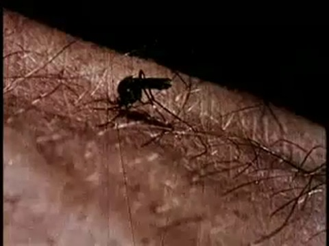
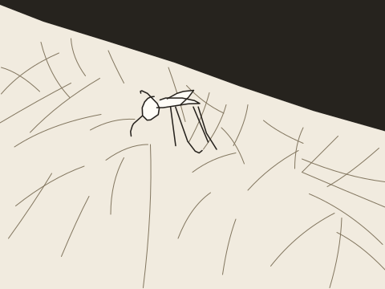
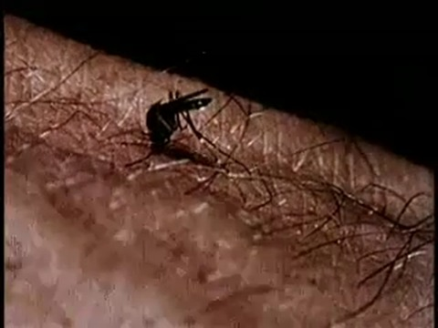
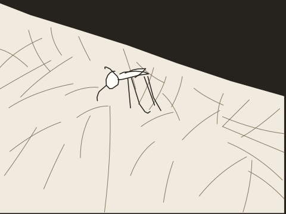
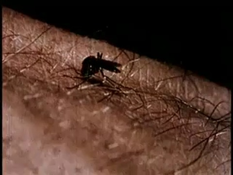
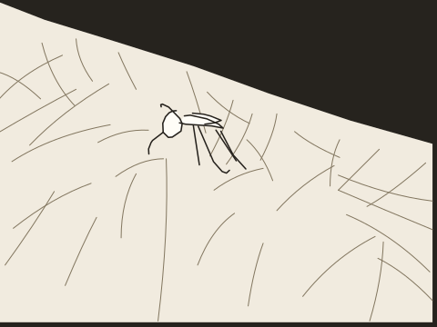
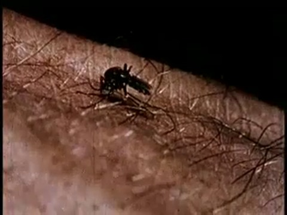
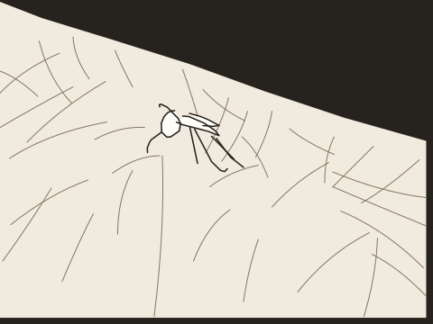
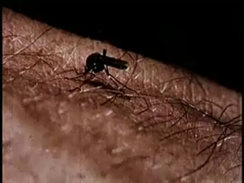
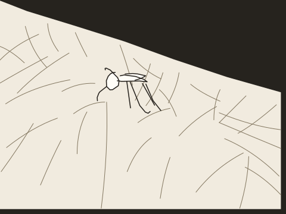
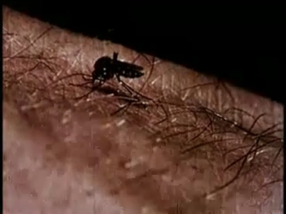
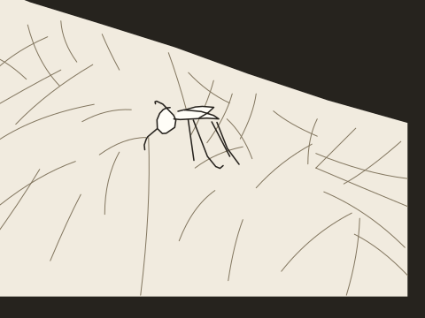
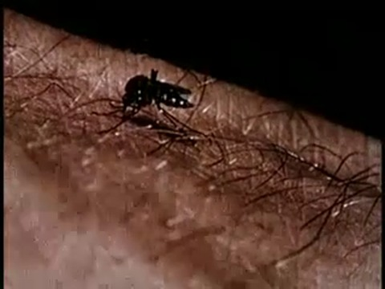
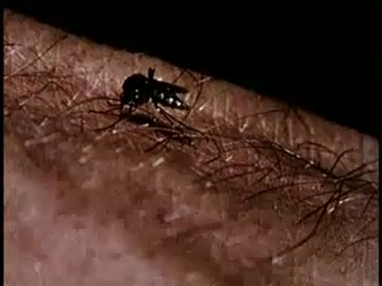
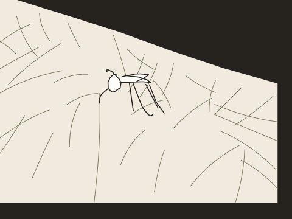
References and review
Quick, Draw! key 6165377341980672. Same original eight strokes, in native left-facing orientation to match the footage. The earlier isolated preview was mirrored. Quick, Draw! contributors / Google Creative Lab, CC BY 4.0. Skin and hairs drawn once by agent against the source.
Archive: Insects, clip-relative 0.234–5.239 s. Archive rights were not supplied in the candidate manifest.
SAM 2.1 source masks were run upstream; 62 source mask frames and their exact provenance are retained. Filled drawing vs source-mask IoU: mean 0.198, minimum 0.123. The source-pose mask-fit bar is not met (mean≥0.65, minimum≥0.45). Thin appendages are incompletely segmented. Predicted SAM confidence is not measured cartoon fit.
Timeline and observations · Assembly checks · Source SAM masks · Original doodle · Character traces

Recognition classifier and independent normal-speed playback remain unrun. Authored contact holds have not passed the independent four-interval contact test. No training ran. This is not a release-approved result.